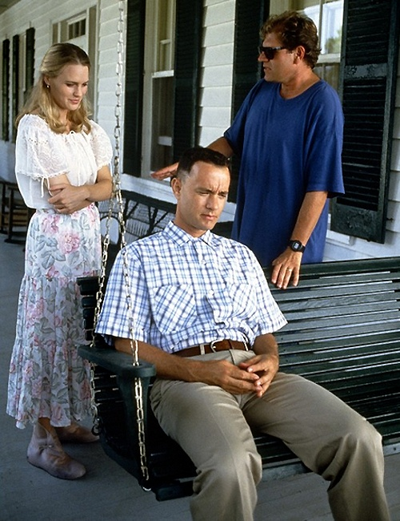

Back to the Future Es una pelicula, del año 1985. Dirigida por el cineasta Robert Zemeckis, escrita por Bob Gale y producida por el reconocido Steven Spielberg.
El elenco esta compuesto por Michael j Fox, Christopher Loyd, Lea Thompson, Crispin Glover y Thomas F.wilson, como protagonistas.
La compania que se encargo de presupuestar el film fue, Universal Pictures, con un monto de $19 millones de dolares y recaudo hasta el dia de hoy,$388,8 millones.
Robert Zemeckis
Nacio en Chicago ilinoils, hijo de un lituano y una italoestadiunidense, estudio en la universidad al sur de california. Sus primeras peliculas se han enfocado sobre todo en los efectos especiales, en lugar de la trama o el desarrollo dek personaje. El estilo de Zemeckis, sigue la linea y estilo del famoso Steven Spielberg, quien produjo muchas de sus peliculas.

Otros proyectos
Ademas de realizar Volver al Futuro Robert Zemeckis, dirigio muchos otros films en su carrera como director. Uno de ellos fue Forest Gump protagonisada por el mismo, Tom Hanks. La pelicula fue un exito hasta el dia de hoy y en su momento logro ganar 6 premios oscars y tres globos de oro.
Michael j Fox
Michael Andrew Fox, más conocido como Michael J. Fox, es un actor canadiense-estadounidense retirado. Su carrera en el cine y la televisión comenzó a finales de los años setenta. Entre sus papeles se destacan Marty McFly en la trilogía de Regreso al futuro (1985-1990); Alex Keaton en Enredos de familia (1982-1989), por la cual ganó 3 premios Emmy y 1 Globo de Oro. En 1991 le diagnosticaron párkinson y reveló su problema al público en 1998. En el año 2000, abandonó la actuación cuando los síntomas de la enfermedad se hicieron más severos. Desde entonces se ha mantenido como activista por la cura de dicha enfermedad.
Christopher Loyd
Christopher Allen Lloyd (Stamford, Connecticut; 22 de octubre de 1938) es un actor estadounidense. Ha interpretado a Doc Emmett Brown en la trilogía de Back to the Future (1985, 1989 y 1990), a Fester Addams en The Addams Family (1991) y Addams Family Values (1993), y al Juez Doom en ¿Quién engañó a Roger Rabbit? (1988). También ha trabajado como actor de voz interpretando a personajes animados, principalmente villanos, como Merlock en Patoaventuras: La película - El tesoro de la lámpara perdida (1990) o Grigori Rasputín en Anastasia (1997).